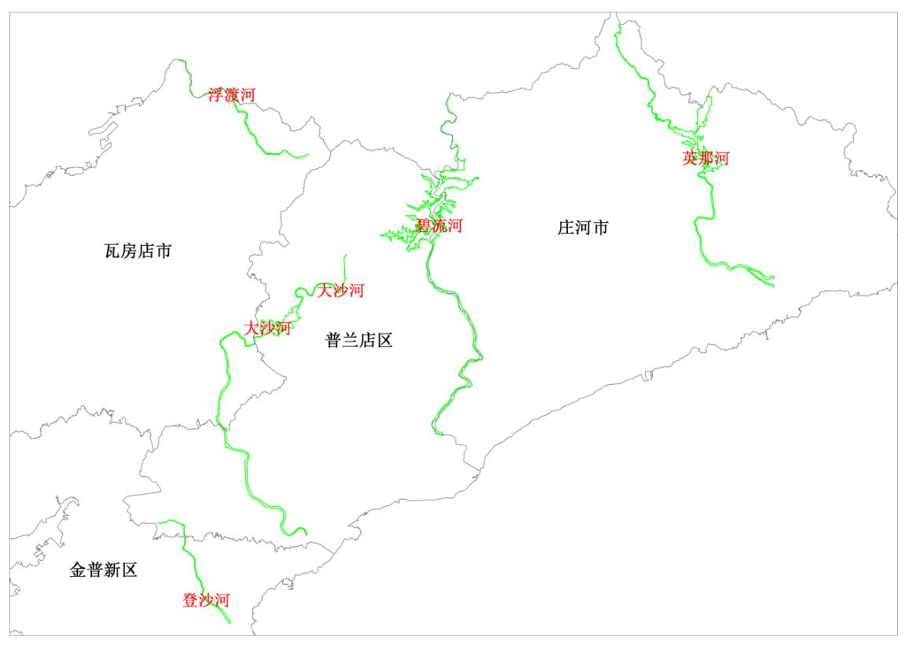

原始PPT文字、表格及嵌入图像。草案占位、外地样例和历史日期按原稿保留，不能据此认定本项目已完成相应程序。

默认人工翻页。长流程请点击“播放演示”，过程可暂停、重播或跳过。打开原稿资料或切到后台时自动暂停，返回后可手动继续。
第五页左侧选择河流可定位并高亮，“全部”显示五河总览。地图可拖拽缩放，获得焦点时方向键平移；“查看原件”打开原稿分布图。小屏采用纵向阅读，桌面和大屏使用完整演示画布。
首版按既有资料制作。草案、外地样例与实际待确认进度有明确标识，未新增缺失数据。
请允许本地JavaScript运行以打开交互演示。原始资料位于assets/originals，完整工程说明见README.md。